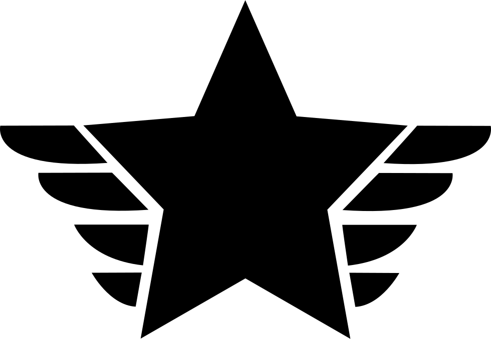
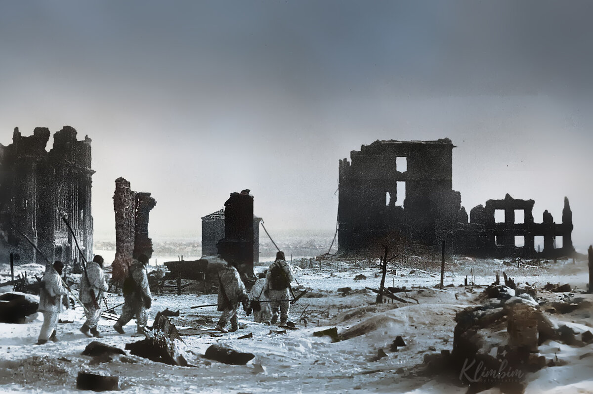
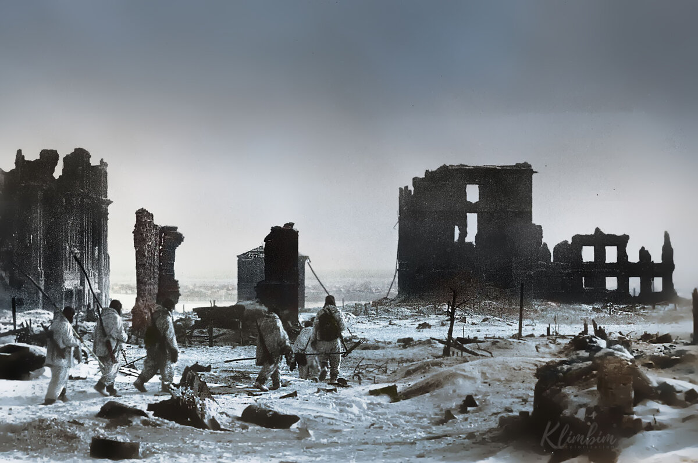

Сталинградская битва
17 июля 1942 года — 2 февраля 1943

17 июля 1942 года — 2 февраля 1943
 

Сталинградская битва - одно из важнейших сражений Второй Мировой и Великой Отечественной войн между
Немецкое наступление продолжалось с 17 июля по 18 ноября 1942 года, его целью был захват большой излучины Дона, волгодонского перешейка и Сталинграда (современный Волгоград).
Осуществление этого плана блокировало бы транспортное сообщение между центральными районами СССР и Кавказом, создало бы плацдарм для дальнейшего наступления с целью захвата
кавказских месторождений нефти.
За июль—ноябрь Красной Армии удалось заставить немцев увязнуть в оборонительных боях, за ноябрь-январь окружить группировку немецких войск в результате операции «Уран»,
отбить деблокирующий немецкий удар «Винтергевиттер» и сжать кольцо окружения к развалинам Сталинграда. Окружённая группировка капитулировала 2 февраля 1943 года, в том числе
24 генерала и фельдмаршал Паулюс.
Эта победа после череды поражений 1941—1942 годов положила начало «коренному перелому» (перехвату советским командованием стратегической инициативы) в войне.
По количеству суммарных безвозвратных потерь (убитые, умершие от ран в госпиталях, пропавшие без вести) воевавших сторон, Сталинградская битва стала одной из самых
кровавых в истории человечества: РККА — 478 741 чел. (323 856 чел. в оборонительной фазе сражения и 154 885 чел. в наступательной); вермахт — ок. 300 тыс. человек;
германские союзники (итальянцы, румыны, венгры, хорваты) — ок. 200 тыс. человек, число погибших горожан невозможно установить даже приблизительно, но счёт идёт не
менее чем на десятки тысяч.
Военным значением победы стало снятие угрозы захвата вермахтом Нижнего Поволжья и Кавказа, особенно бакинских месторождений нефти.
| Противники | |
Страны Оси: Агрессивный военный и экономический союз Германии, Италии, Японии и других государств, которому противостояла во время Второй мировой войны антигитлеровская коалиция.
| |